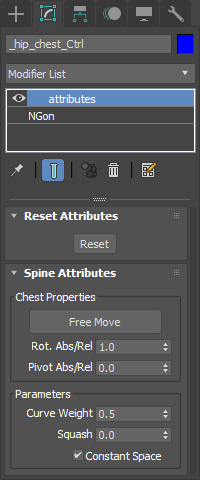

Spine¶
There are three type of controllers in hub module. Main chest controller, inner chest controller, and spine controllers. These are same for the head module.
Spine Attributes¶
These attributes can be found in the main chest controller’s modifier stack.
- Free Move:
If it’s enabled chest stays in place if parent controller moves, rotates or scales. As default chest moves with parent controller.
freemove off - freemove on
- Rotation Absolute/Relative:
When “Free Move” disabled, chest orientation is affected from its parent rotation depends on slider value.
abs/rel:1.0 - abs/rel:0.0
- Pivot Self/Parent:
When “Free Move” disabled, chest controller can be rotated between self and parent pivot depends on slider value.
self/parent:0.0 - self/parent:1.0
- Curve Weight:
Distributes spine bone tan weights between top and bottom controllers. Spine bones follows more or less spine controllers depends on slider value.
weight:0.5 - weight:1.0
- Squash:
Spine bones squashable depends on slider value.
squash:0.0 - squash:1.0
- Constant Space:
Spine bone positions are distributed equally or bezier between top and bottom controllers.
constant space on - constant space off